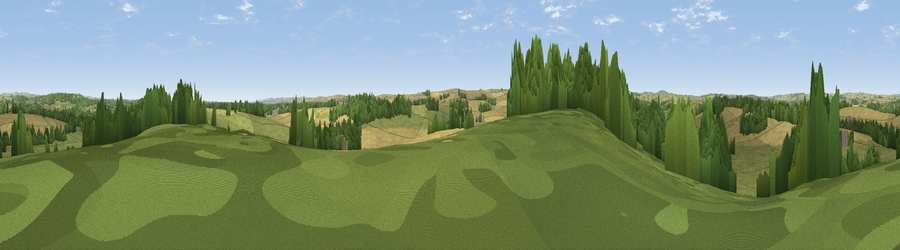

Viewpoint near West Stafford
#38696 in England · top 88% of its area beats it · near West StaffordWhere it is
The exact computed spot (SY 71375 88525). Click the marker for map links.
The view, rendered

A 360° render of this exact spot computed from the terrain model, tree cover and land cover — summer colours, afternoon light, calibrated against photographs of famous viewpoints. Real trees, hedges and buildings will differ in detail.
The panorama
Grey silhouette: terrain skyline in each direction (720 bearings, Earth curvature and refraction included). Dashed green: skyline with trees (+15 m) and buildings (+8 m) as obstacles. Blue strip: how far the ground is visible on each bearing.
Where the view opens
Wedge length = distance to the farthest visible ground on that bearing (vegetation-aware). Rings at 10, 25 and 50 km.
What fills the view
39% grassland · 38% cropland · 21% woodland · 2% built-up
Angular shares of the visible panorama (visual magnitude), not map area. Landscape diversity 0.50 (0–1 Shannon).
Key numbers
More beautiful places nearby
The staircase of upgrades: each row has a higher view potential than everything closer. Driving times are estimates from straight-line distance, calibrated against real road routing — check an actual route before setting out.
| Place | Direction | Drive | Score |
|---|---|---|---|
| Viewpoint near Sutton Poyntz | S · 3 km | ~7 min | 46.0 |
| Viewpoint near Sutton Poyntz | SSW · 3 km | ~8 min | 65.6 |
| Viewpoint near Sutton Poyntz | SSW · 4 km | ~9 min | 76.9 |
| East Hill | S · 4 km | ~9 min | 79.6 |
| Viewpoint near Sutton Poyntz | SSW · 5 km | ~10 min | 79.9 |
| Viewpoint near Owermoigne | SE · 8 km | ~16 min | 81.0 |
| Viewpoint near Chaldon Herring | SE · 9 km | ~17 min | 82.9 |
| Viewpoint near Chaldon Herring | SE · 9 km | ~18 min | 83.5 |
50.69566, -2.40665 · source: screening · position refined by local search. Computed location — check access rights before visiting.